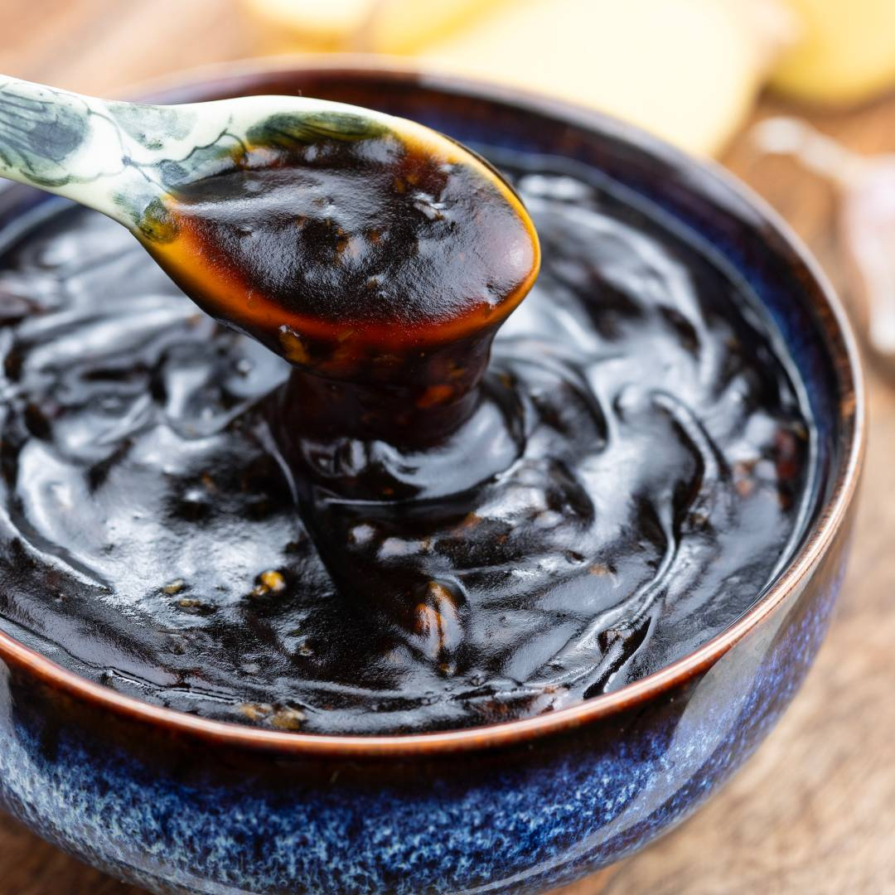

Home
Sos teriyaki

Opis
Świetny do mięsa, bardzo smaczny
Dokładna historia sosu teriyaki nie jest znana,
ale przypuszcza się, że pierwsze przepisy powstały w XVII wieku,
za czasów szogunatu Tokugawa, w okresie pokoju i rozwoju
społecznego i kulturowego.
Składniki:
- 120 ml jasnego sosu sojowego
- 100 g cukru brązowego lub trzcinowego - około 1/4 szklanki
- 80 ml zwykłej wody - niecała 1/3 szklanki
- 3 łyżeczki skrobi kukurydzianej lub ziemniaczanej - 15 g
- 3 łyżki mirinu lub 2 łyżki
octu ryżowego, jabłkowego lub z białego wina
- 1 łyżka startego korzenia imbiru - około 10-15 g
- 1 spory ząbek czosnku - siekany lub przez praskę
- 1 łyżka miodu lub syropu np. z agawy lub klonowego
- 1 łyżeczka oleju sezamowego - można pominąć
Proces tworzenia:
- sos sojowy, cukier, ocet, imbir, czosnek, miód i olej
wrzucamy do garnuszka i mieszamy na małym ogniu
- w wodzie mieszamy skrobię i dolewamy do reszty
- Gotujemy minutę, dwie i
Voilà! Gotowe!